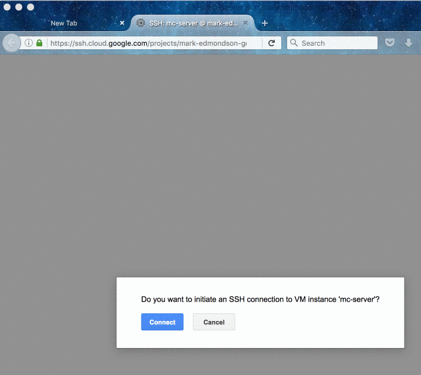

docker-ssh-futures.RmdGoogle Cloud comes with a browser based SSH application, which you can launch via gce_ssh_browser to set it up further to your liking.

SSH is useful for many applications, but is also currently used by the docker_x commands to manipulate docker images on the VM - this may change in future versions, but currently, without SSH authentication, you won’t be able to use Docker commands from your local session.
You can also send ssh commands to your running instance from R via the gce_ssh() commands.
For this you will need to connect once via the Google Cloud SDK gcloud compute ssh , or copy the default keys.
After that step, you will then in future be able to connect via:
library(googleComputeEngineR)
vm <- gce_vm("my-instance")
## run command on instance
gce_ssh(vm, "echo foo")
# fooCalling gce_ssh directly will call gce_ssh_setup with defaults set if it has not been run already. It will look for a username via Sys.info()[["user"]].
If you want more customisation over the SSH connection, then you will need to generate SSH crudentials yourself following this Google guide.
Once you have generated details for your username, the public and private key, you can connect via:
library(googleComputeEngineR)
vm <- gce_vm("my-instance")
## add SSH info to the VM object
vm <- gce_ssh_setup(vm,
username = "mark",
key.pub = "filepath.to.public.key",
key.private = "filepath.to.private.key")
## run command on instance
gce_ssh(vm, "echo foo")
# fooYou may also need to specify the username if its not SSH safe - for instance uppercase or with symbols. The VM will generate a user account the same name as the one you log in with.
Windows does not come with an SSH client installed, so it is recommended that you use the SSH client bundled with RStudio instead.
We assume you already use RStudio, if you don’t want to use it or can’t then you will need to download an alterantive SSH client that will respond on the command line to
ssh. RStudio uses MSYS you may want to try.
Add the RStudio SSH client to your PATH variable, e.g. C:\Program Files\RStudio\bin\msys-ssh-1000-18
If you look in RStudio you can view the location of its stored SSH keys (Options > git/SVN). These are the keys that we will add to the SSH information for the instance. By default they are C://.ssh/id_rsa.pub and C://.ssh/id_rsa
Create your VM as normal, and add the custom SHH information:
For docker containers, the docker_cmd functions run the shell commands within a docker container. These commands are derived from harbor, which you may want to use for its other features. With harbor, you can also develop your docker container locally first using BootToDocker or similar before pushing it up.
A demo using speaking to a docker container is below:
library(googleComputeEngineR)
# Create a virtual machine on Google Compute Engine
ghost <- gce_vm("demo",
image_project = "google-containers",
image_family = "gci-stable",
predefined_type = "f1-micro")
ghost
#> ==Google Compute Engine Instance==
#>
#> Name: demo
#> Created: 2016-10-06 04:41:56
#> Machine Type: f1-micro
#> Status: RUNNING
#> Zone: europe-west1-b
#> External IP: 104.155.0.147
#> Disks:
#> deviceName type mode boot autoDelete
#> 1 demo-boot-disk PERSISTENT READ_WRITE TRUE TRUE
# Create and run a container in the virtual machine.
# 'user' is the one you used to create the SSH keys
# This might take a while.
con <- docker_run(ghost, "debian", "echo foo", user = "mark")
#> Warning: Permanently added '104.155.0.147' (RSA) to the list of known hosts.
#> Unable to find image 'debian:latest' locally
#> latest: Pulling from library/debian
#> 6a5a5368e0c2: Pulling fs layer
#> 6a5a5368e0c2: Verifying Checksum
#> 6a5a5368e0c2: Download complete
#> 6a5a5368e0c2: Pull complete
#> Digest: sha256:677f184a5969847c0ad91d30cf1f0b925cd321e6c66e3ed5fbf9858f58425d1a
#> Status: Downloaded newer image for debian:latest
#> foo
con
#> <container>
#> ID: 92f96d32d081
#> Name: harbor_6rdevp
#> Image: debian
#> Command: echo foo
#> Host: ==Google Compute Engine Instance==
#>
#> Name: demo
#> Created: 2016-10-06 04:41:56
#> Machine Type: f1-micro
#> Status: RUNNING
#> Zone: europe-west1-b
#> External IP: 104.155.0.147
#> Disks:
#> deviceName type mode boot autoDelete
#> 1 demo-boot-disk PERSISTENT READ_WRITE TRUE TRUE
# Destroy the virtual machine from Google Compute Engine
gce_vm_delete(ghost)To run R commands within a docker image in the cloud:
library(googleComputeEngineR)
## make instance using R-base
vm <- gce_vm(template = "r-base", name = "rbase")
## add SSH info to the VM object
vm <- gce_ssh_addkeys(username = "mark",
instance = "your-instance",
key.pub = "filepath.to.public.key",
key.private = "filepath.to.private.key")
## run an R function on the instance within the R-base docker image
docker_run(vm, "rocker/r-base", c("Rscript", "-e", "1+1"))
#> [1] 2
gce_vm_delete(vm)
#> ==Operation delete : PENDING
#> Started: 2016-10-07 02:37:14
gce_check_zone_op(.Last.value)
#> Operation complete in 33 secs
#> ==Operation delete : DONE
#> Started: 2016-10-07 02:37:14
#> Ended: 2016-10-07 02:37:47
#> Operation complete in 33 secs Using harbor you can see other metadata about your container from your local R:
library(googleComputeEngineR)
library(harbor)
vm <- gce_vm(template = "rstudio",
username = "mark",
password = "mark1234",
predefined_type = "f1-micro")
## get running rstudio container
cont <- containers(vm)
names(cont)
"rstudio"
## see if its running
container_running(con$rstudio)
[1] TRUE
## get logs from container
container_logs(con$rstudio)
## get metadata
container_update_info(con$rstudio)
<container>
ID: 05c5437ac968
Name: rstudio
Image: rocker/rstudio
Command: /init
Host: ==Google Compute Engine Instance==
Name: rstudio-dev
Created: 2016-10-07 03:30:24
Machine Type: f1-micro
Status: RUNNING
Zone: europe-west1-b
External IP: 104.199.19.222
Disks:
deviceName type mode boot autoDelete
1 rstudio-dev-boot-disk PERSISTENT READ_WRITE TRUE TRUEYou can run R functions asynchronously over a cluster of Google VMs using the R package future.
Consult the future readme for further details, but a quick demo is shown below:
library(future)
library(googleComputeEngineR)
vm1 <- gce_vm("cluster1", template = "r-base")
vm2 <- gce_vm("cluster2", template = "r-base")
vm3 <- gce_vm("cluster2", template = "r-base")
vms <- list(vm1, vm2, vm3)
plan(cluster, workers = vms)
## use futures %<-% to send a function to the cluster
si %<-% Sys.info()
print(si)
## tidy up
lapply(vms, FUN = gce_vm_stop)The package includes the function gce_future_install_packages which will load libraries onto your cluster and commit the r-base docker container they are running on.
You can then save these containers to the Google Container registry as detailed via gce_save_container, for loading and use later for your asynchronous projects.